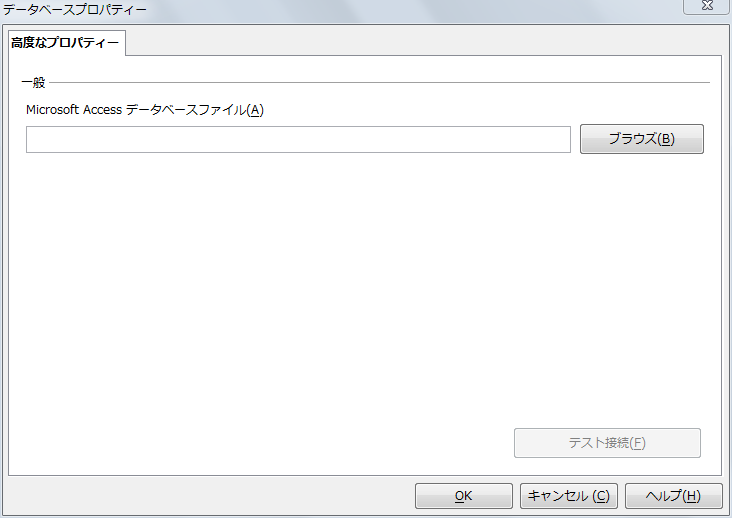
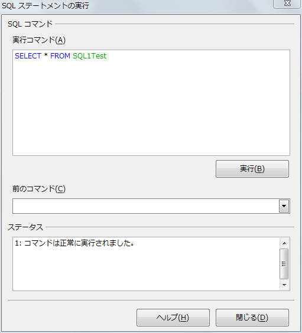
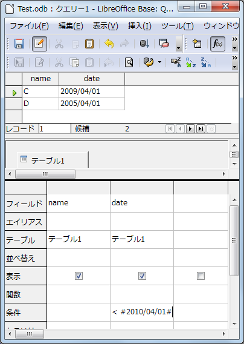
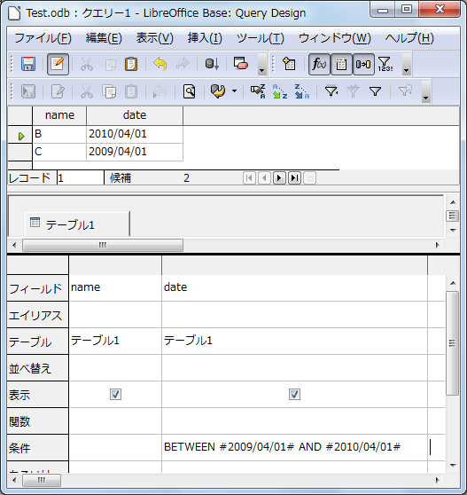

Home of site
初心者Memo / Base
Database(以後DB)について
BaseはAccessの様にDB一体型Softでは無く好きなDBとConnectする事が可能です。
標準DBは組み込みのHSQLDBですがMySQL、Oracle、PostgreSQL、等の使用も可能です。
他のDBのTable DataのImportについて

Baseは自前のDBを持っておらず、
「実際には既存のデータベースへのリンク」
です。従って、MS-ACCESSのTbale DataをImportする場合は最初に「新規データベースの作成」では無く「既存のデータベースに接続」で「MS-ACCESS」を選択して保存します。
これでMS-ACCESSのTable DataはImportできます。
別の「MS-ACCESS」 FileのDataと接続したい場合は、「テーブル」画面で
「右クリック」=>「データベース」=>「プロパティ」
にて右図Dialogが表示されるので変更するMS-ACCESS Fileを選択します。
SQL文
BaseのSQL文はDB依存です。つまり使用DBによってSQL文は変わります。
HSQLDBは、ANSI標準SQL（+α）。
《例》
SELECT '1月売上' AS "雪別売上名", SUM("単価" * "注文中の数") AS "売上" FROM "納品" AS "売上"
SQL文の実行

「ツール」「SQL」「SQLステートメントの実行」DialogにSQLを記述して実行します。
SQLにて新規にTableを追加した場合は
「SQLステートメントの実行」Dialogを閉じて、「表示」=>「テーブルの更新」を実行する必要があります。
日付型Dataの抽出

「日付」型Dataは「#」で囲みます。
2010/04/01以前の場合
> #2010/04/01#
Between演算子

2009/04/01から2010/04/01の間のDATA
BETWEEN #2009/04/01# AND #2010/04/01#
Top of Page